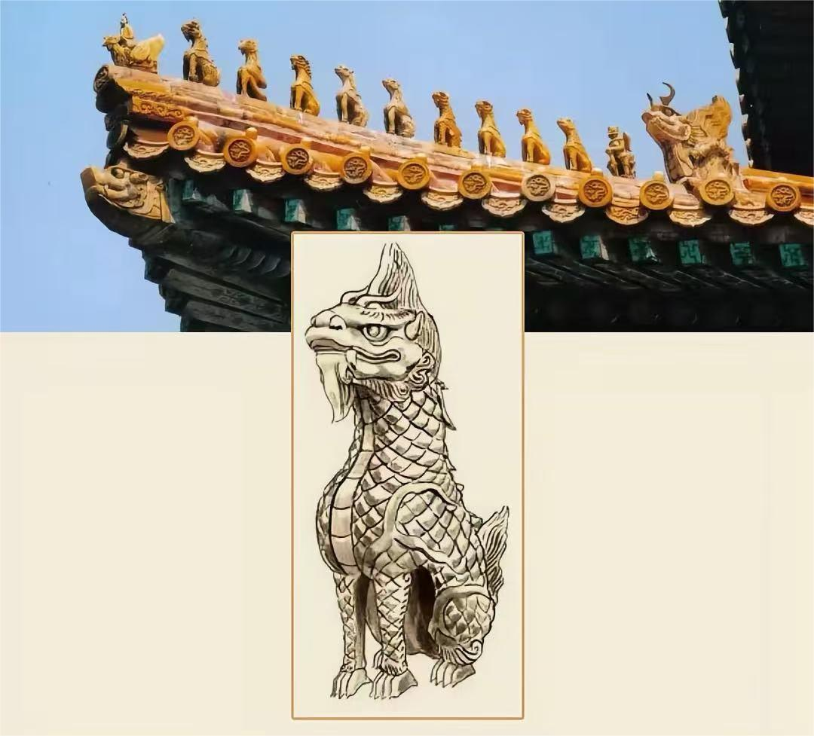
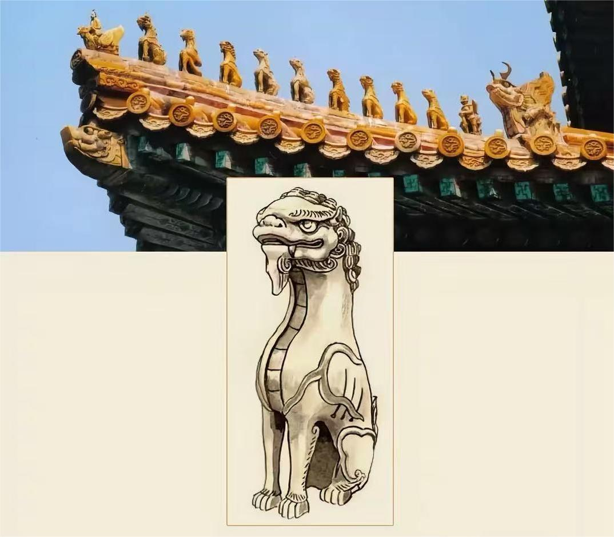
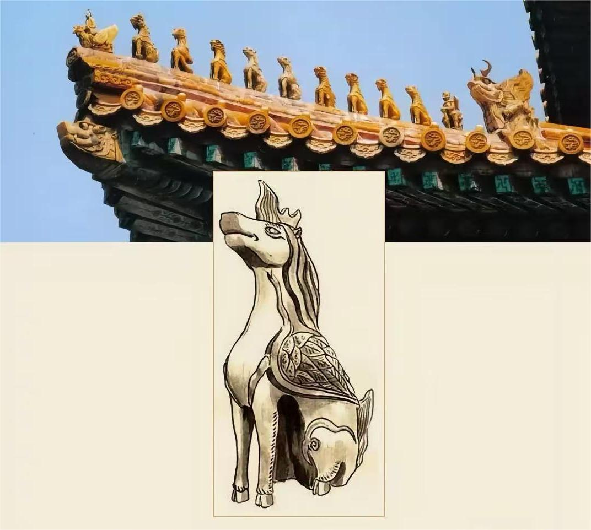
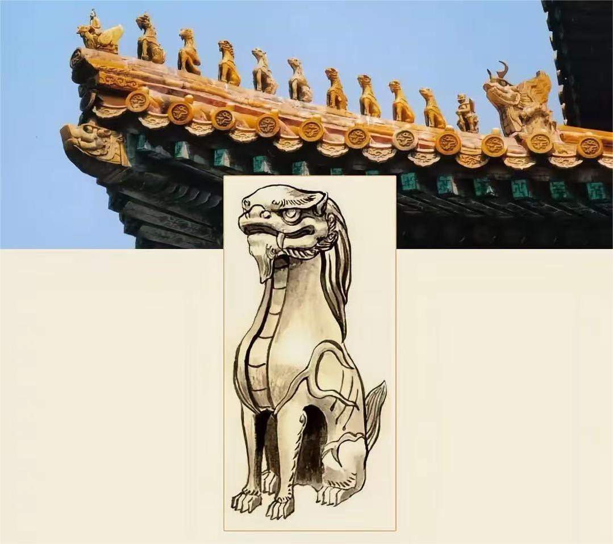
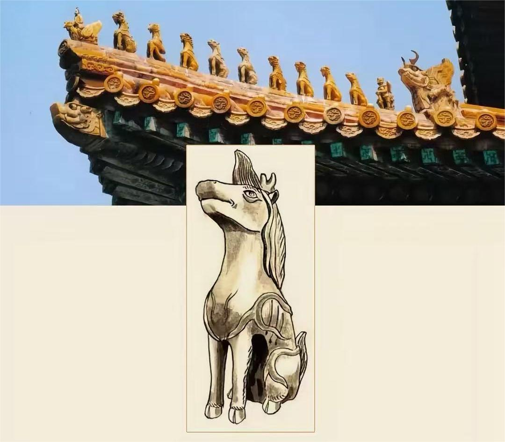

The roof statues of the Forbidden City serve both decorative and spiritual purposes, protecting the imperial buildings from evil spirits and bad fortune. Click on each statue to discover its meaning and symbolism.

Symbolizing the Emperor. Since Qin Shi Huang was called "Ancestral Dragon," many ancient emperors considered the dragon to be the image of the ruler and called themselves "Sons of Heaven." Correspondingly, the image of the dragon became a symbol of the emperor. The reason the dragon has this meaning is closely related to the supernatural powers of dragons in ancient legends and myths, such as "ascending to heaven and diving into the abyss, summoning wind and rain."
The Suanni is a fierce mythical beast symbolizing the warding off of disasters. It resembles a lion, but differs in appearance: a lion has curly fur, while the Suanni has disheveled hair. The Han Dynasty dictionary Erya states: "The Suanni resembles a cat, and eats tigers and leopards." This means the Suanni resembles a cat (a type of light-furred tiger), is extremely fierce, and can devour tigers and leopards.

The lion, symbolizing the warding off of disasters and evil spirits, is considered the king of beasts. Its noble and dignified image exudes a regal air, while also being majestic and auspicious, making it a treasure revered as a guardian of the nation. The ancient Indian Buddhist classic, the Mahaprajnaparamita Sutra, states that the lion is an incarnation of the Buddha and can drive away evil. Therefore, for the ancient ruling class and aristocracy, the lion's majestic image became a symbol of warding off disasters and evil spirits.

The celestial horse is a mythical creature in the sky, symbolizing the warding off of disasters and evil spirits. A key difference between the celestial horse and the seahorse is that the celestial horse has wings, while the seahorse does not. The Book of Han records: "When Taiyi descended, the celestial horse was covered in red sweat, its foam flowing like ochre." Ancient people believed the celestial horse could travel a thousand miles a day and was a fearless, aerial mythical beast.

The Bixi is a mythical creature with the body of a turtle and the head of a dragon. It symbolizes longevity, strength, and wisdom. In Chinese mythology, Bixi is one of the nine sons of the dragon and is often seen carrying stone steles or tablets, representing the burden of knowledge and the weight of history.

The Taotie is an ancient mythical beast from Chinese mythology, often depicted on bronze vessels from the Shang and Zhou dynasties. It represents greed and gluttony but also serves as a protective symbol. The Taotie motif is commonly found on ancient Chinese ritual bronzes and architectural elements.